In China Employee Termination: Pulse Escalation-Ladder Brief for Foreign Employers (2026 Hourly Run)
Key takeaways
- Foreign employers reduce termination risk in China when escalation is structured by level, not by ad-hoc urgency.
- The best time to escalate is before communication and settlement locks, not after contradictions appear.
- Most costly failures still start with cross-functional misalignment across legal, HR, payroll, and local practice assumptions.
- A level-based ladder improves decision ownership and prevents silent risk acceptance.
- Legal depth matters, but escalation discipline determines whether legal strategy survives execution.
Pulse opener: escalation should be designed, not improvised
In many multinational teams, escalation is treated as a last resort. That approach works poorly in China termination cases because by the time teams escalate, the process may already have committed to inconsistent narratives or unresolved settlement assumptions. The business then pays twice—first in coordination friction, then in dispute risk.
This run rotates to a Pulse-style escalation ladder. It is designed for foreign operators who need a clear answer to three questions: when to escalate, to whom, and with what decision deadline.
Plain-language legal context first
China termination decisions are generally route-based under labor law and implementation regulations. In disputes, decision quality is often judged by coherence between route rationale, evidence records, communication behavior, and settlement execution.
For foreign teams, this means escalation is not a sign of failure. It is a control mechanism to preserve coherence before release.
Escalation ladder: Level 0 to Level 4
Level 0 — Routine control (no escalation)
Trigger: all core controls stable (route, evidence, coherence, settlement).
Owner: case owner (HR/legal liaison).
Decision deadline: standard release cycle.
Action: proceed with normal controls and closure checks.
Level 1 — Clarification escalation
Trigger: minor uncertainty that does not yet affect release integrity (e.g., secondary doc traceability, wording precision).
Owner: functional lead (legal or HR).
Decision deadline: same business day.
Action: assign owner/date fix; keep case in monitored state until closed.
Level 2 — Control escalation
Trigger: material gap in one control domain (evidence ownership incomplete, payroll assumption open, local uncertainty unscored).
Owner: cross-functional lead (legal + HR + payroll).
Decision deadline: within 24 hours.
Action: pause release; run joint review and publish remediation decision.
Level 3 — Risk escalation
Trigger: cross-domain mismatch (legal-HR narrative drift, payroll/legal treatment conflict, unresolved city-level risk near release).
Owner: regional governance owner.
Decision deadline: within 12-24 hours, with explicit go/pause choice.
Action: freeze release; provide option set with exposure range and preferred path.
Level 4 — Executive escalation
Trigger: critical contradiction or post-communication inconsistency with material exposure.
Owner: executive sponsor + senior legal.
Decision deadline: immediate/urgent.
Action: stop case progression, issue executive risk acceptance or redesign path, and reset release timeline.
Practical implications for foreign operators
A ladder model improves governance in distributed teams because it standardizes escalation triggers and ownership. Local teams gain permission to escalate early without appearing obstructive; headquarters gains structured decision packets instead of fragmented alerts. This reduces both delay noise and risk blind spots.
For foreign boards and finance teams, ladder levels also improve reporting quality. Exposure can be linked to escalation state, making contingency planning more realistic.
Operations module
A) SOP by role ownership
Legal: own route definition, confidence signal, and legal-risk escalation triggers.
HR: own communication coherence and chronology integrity.
Payroll: own settlement/IIT validation and timing readiness.
Manager: stay within approved communication boundaries.
Vendor/EOR: maintain escalation state visibility and handoff continuity.
B) Document checklist and ladder gates
Required artifacts:
- route-confidence memo,
- evidence index with owner/source/status,
- aligned communication packet,
- settlement worksheet + tax notes,
- timestamped approvals,
- archive/retrieval ownership map.
Gate rules:
- no release at Level 2+ without explicit resolution,
- mandatory executive note for Level 4 decisions,
- closure requires retrieval validation regardless of level history.
C) Exception pathways
Pathway A: route uncertainty persists → Level 2/3 escalation.
Pathway B: evidence owner missing near release → Level 2 hold.
Pathway C: payroll/legal mismatch → Level 3 risk escalation.
Pathway D: local uncertainty unresolved → Level 3 with option set.
Pathway E: communication already diverged materially → Level 4.
D) System controls and audit fields
Recommended fields:
escalation_levelescalation_triggerdecision_ownerdecision_deadlineresolution_statusoverride_reasonclosure_retrieval_pass
Control standards:
- auto-escalate when deadlines are breached,
- immutable logs for level changes and overrides,
- monthly review on level distribution and recurrence drivers.
Common mistakes and prevention
Mistake: escalating too late
Prevention: tie escalation to trigger thresholds before release milestones.
Mistake: unclear escalation ownership
Prevention: assign single accountable decision owner at each level.
Mistake: no decision deadline
Prevention: every escalation requires time-bounded resolution target.
Mistake: treating Level 2/3 as optional alerts
Prevention: enforce pause gates until formal resolution.
Mistake: closure without post-escalation retrieval check
Prevention: keep retrieval validation mandatory regardless of prior level.
What to watch next
Foreign operators should monitor escalation-pattern concentration by city and function. If Level 3/4 cases cluster in specific teams, the issue is likely process design or training quality, not isolated case complexity. They should also watch escalation-cycle time; prolonged Level 2/3 durations are early warnings of control friction and future dispute cost.
Escalation SLA design for multinational teams
Escalation ladders work best when service-level expectations are explicit. For foreign operators, a practical baseline is: Level 1 resolved same day, Level 2 resolved within 24 hours, Level 3 within 12-24 hours with formal option pack, and Level 4 immediate executive routing. These windows should be published in governance playbooks so teams do not negotiate deadlines during active risk events.
SLA tracking should also include “escalation aging”—how long cases remain at each level. Aging is a leading indicator of process friction. If Level 2 cases consistently age beyond target, the issue is often cross-functional ownership design, not legal complexity alone. If Level 3 cases cluster by location, local process adaptation may be needed.
FAQ
Is escalation always negative?
No. Early, structured escalation is a risk-control strength.
How many levels are practical?
Five levels (0-4) are enough for most multinational governance setups.
Can small teams use this?
Yes. Use fewer approvers but keep level triggers and deadlines explicit.
What should trigger immediate Level 4?
Material contradictions after communication release or unresolved high-exposure conflict.
Does this replace local legal counsel?
No. It complements counsel by improving decision routing and timing.
Is this model uniform across China cities?
Baseline ladder logic is broad, but local practice still affects final risk judgments.
Legal appendix (secondary depth)
1) Core legal anchors
The PRC Labor Contract Law and implementation regulations provide statutory framework for termination routes and obligations. SPC interpretations provide labor-dispute application context.
2) Practitioner and market synthesis
Practitioner sources emphasize coherence and process discipline. Market/payroll references reinforce settlement/tax handling as legal-risk interfaces.
3) Residual uncertainty
City-level variance and language nuance can affect edge-case outcomes; high-exposure matters require localized professional advice.
Source-fit note for this run
This run maintained required source mix and rotated to escalation-ladder framing for better Pulse-style decision routing clarity. Repetitive readiness-index scoring language was replaced with trigger-owner-deadline escalation logic.
Disclaimer
This content is for informational purposes only and does not constitute legal, tax, payroll, accounting, or compliance advice. Employers should seek qualified local professional advice for case-specific decisions.
Sources
- National People's Congress. Labor Contract Law of the PRC (English text). Accessed 2026-02-28: http://www.npc.gov.cn/zgrdw/englishnpc/Law/2007-12/13/content_1384064.htm
- State Council. Implementation Regulations of the Labor Contract Law (Decree No. 535). Accessed 2026-02-28: https://www.gov.cn/gongbao/content/2008/content_1124615.htm
- Supreme People's Court. Interpretation (I) on Application of Labor Dispute Law. Accessed 2026-02-28: https://www.court.gov.cn/fabu/xiangqing/243981.html
- China Briefing. Employee Termination in China. Updated 2025-10-17, accessed 2026-02-28: https://www.china-briefing.com/news/employee-termination-in-china/
- Littler. Key Recent Developments in China's Employment Law. Published 2024-03-20, accessed 2026-02-28: https://www.littler.com/news-analysis/asap/key-recent-developments-chinas-employment-law-china-us-comparative-perspective
- PwC. PRC Individual Taxes on Personal Income (Tax Summaries). Accessed 2026-02-28: https://taxsummaries.pwc.com/peoples-republic-of-china/individual/taxes-on-personal-income
Need local employment support in China?
If you need a compliance-first partner for hiring, payroll, and risk controls in China, China-Payroll.com can help evaluate the right setup.
Image Prompt Pack
Create a 16:9 hero image for article title: 'In China Employee Termination: Pulse Escalation-Ladder Brief for Foreign Employers (2026 Hourly Run)'. Scene: global operations team evaluating workforce model options for China market entry. Include motifs: decisio…